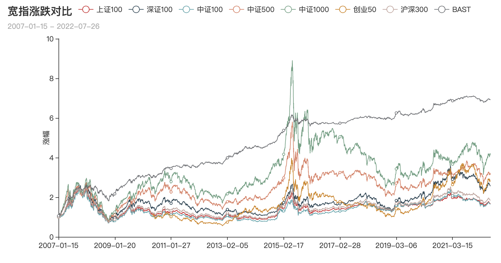

宽指的正确打开方式①：市值偏好
¶近10年宽指涨跌幅对比
参考宽指体系构成解构中的研究，我们选择不同市场规模具有代表性的指数作为研究。
- 宽指：中证100，沪深300，中证500，中证1000
- 市场宽指：上证180，深证100，创业板50，中小100
选择标准：全市场宽指尽量覆盖大中小盘。上证、深证、中小、创业需要有代表性。
弹性最佳的依次是：中证1000，中证500，创业50，中小100，深圳100，沪深300，中证100，上证180

¶近10年宽指组合最优拟合
拟合标准：将不同的宽指做成策略组，以阶段涨幅为参考，当日买入，次日卖出。拟合出组合净值。
拟合周期：2007-01-15 - 2022-07-26
¶频率统计
| 净值 | 中证100 | 上证180 | 深证100 | 中证500 | 中证1000 | 创业50 | 中小100 |
|---|---|---|---|---|---|---|---|
| 6.1523 | 1533 | 617 | 1623 | ||||
| 6.8192 | 1303 | 448 | 976 | 1046 | |||
| 5.5091 | 927 | 239 | 528 | 966 | 1113 | ||
| 5.7278 | 644 | 225 | 236 | 201 | 491 | 924 | 1052 |
| 6.9148 | 1386 | 1313 | 1074 | ||||
| 6.8654 | 848 | 289 | 416 | 352 | 893 | 975 | |
| 6.4313 | 990 | 532 | 354 | 905 | 996 |
沪深300，并不是一个盈利指标，应该说是一个参考指标，属于基线。在此，我们没有将沪深300加入策略组合中。
通过组合统计结果，我们可以看出，中小100，有较高的出现频率，但是不能获取较高的收益，而且在所有参考指标中弹性处于中间位置，说明他不能涨，不是一个收益指标。
中证500和中小100一样，也并不是一个盈利指标。因为好了会晋级到沪深300，沪深300不好的会跌落到中证500，而500不好的会跌落到中证1000，从市值上来说，这是一个区间跨度很大的指标，指标的溢价来自于能晋级到300的成分股，同时这也是一个成长和价值并存的指标，这个指标更适合在两次指标调整之间做波段，或者说作为市场风格的风向标看待。当500强的时候，应该是500，成长，中小100共振的时候，当然这时候创业、创业板50、中证1000也可能会一起共振。在A 股的早期，市场标的少的时候，中证500有跟踪价值，随着两市的扩容，中证500和中小100反而不如创业板50和中证1000更能代表市场的不同方向。当然中小板的概念实际上也已经模糊了。
选中证100，上证180，深证100本来是期望区分不同的大盘市场风格。本来是不看好中证100的，实际对比中发现，没有什么区分的意义。区分后也不能获取更多的超额收益。说明单纯从大盘的角度来说，中证100能覆盖大多数情况。而且放到拉长周期来看，这三个指数基本上呈现正相关关系。中证100足以覆盖。至于上证50，我更觉得中证100更好一些。
最后从宽指数角度来说，我们选择了3个指标来作为判断市场的市值偏好指标。
这三个指标是：中证100，中证1000和创业50。当然这三个指标组合也是拟合后结果最好的。做场内 ETF 的话，也应该有不错的收益。